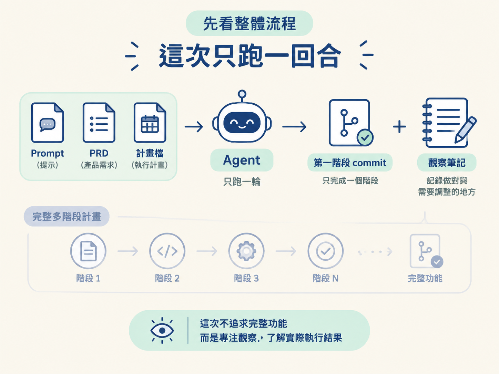
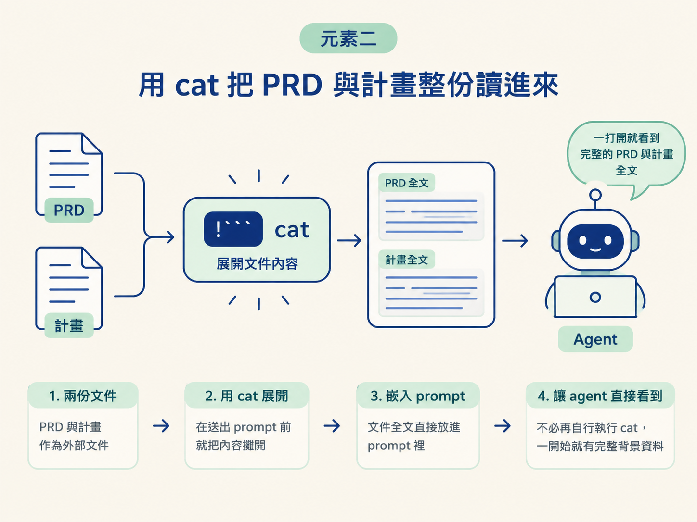
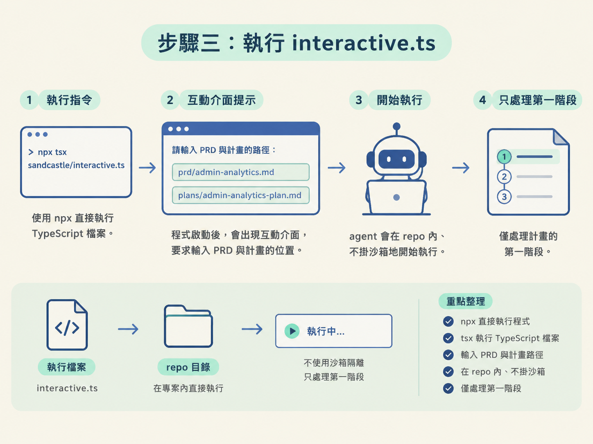
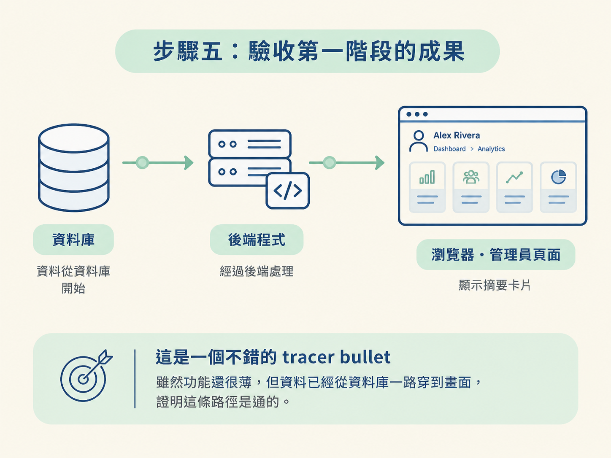

這一節要做的事很單純：設定並執行 interactive.ts，看懂 prompt.md 如何把 PRD 與計畫展開成完整 prompt，最後確認 agent 只完成計畫中的第一個任務。
動手前，請準備好一個已安裝 Node 與 pnpm 的專案、一份 PRD、一份對應的計畫檔，以及能執行 npx 的環境。這次先不需要沙箱，因為我們要觀察最基本的一回合執行流程。
警告：這個階段刻意不掛沙箱，代表 agent 對你的檔案系統有實際權限。請在可以犧牲的實驗環境裡跑，不要在放著重要資料又沒人看管的機器上執行。真正的隔離設定留到後面的沙箱節點。
前兩步已經鋪好了路：你知道「do phase N」是一個迴圈，也知道第一次應該先在 interactive 模式、沒有沙箱的環境裡觀察。現在要真的跑一次。
這次不追求做出完整功能，而是把迴圈拆到只剩一回合：讓一份 prompt 加上一份 PRD 與計畫進入 agent，接著看清楚它實際做了什麼、哪些地方符合預期，以及哪些地方會讓你想修改 prompt。
跑完後，你應該得到兩樣東西：

先打開 interactive.ts。這個檔案通常短得有點意外，因為它幾乎只負責三件事：選擇哪個 agent、使用哪個沙箱，以及把哪一段 prompt 餵給 agent。
// sandcastle/interactive.ts — 三個關鍵設定的示意
// 1. 這次用 Claude Code；也可以換成 Codex 或 OpenCode
agent = "claude-code"
// 2. 第一次先用 none，之後才換成 docker
sandbox = "none"
// 3. 這一回合要跑的完整指令，放在同資料夾的 prompt.md
promptFile = "sandcastle/prompt.md"實際欄位名稱以你專案裡的檔案為準，但要掌握這三個設定彼此獨立：
agent 決定這次由哪個 agent 執行。sandbox 決定 agent 在什麼隔離環境裡執行。promptFile 決定這一回合要使用哪份指令。這次只調整 prompt，不動 agent 與沙箱。等 prompt 穩定後，再把 sandbox 換成 docker。一次只動一個變數，就像排查電路時一次只拔一條線；出了問題，你才知道是哪個設定造成的。
真正控制這一回合行為的是 prompt.md。它和前面節點寫過的 do work skill 很像，但多了 Sandcastle 專屬的輸入語法。整份 prompt 可以拆成四個元素，逐一確認會比較容易。
Sandcastle 提供了一個小巧但很實用的語法：如果反引號包住的程式碼區塊前面加上驚嘆號，這段內容就不會只被當成文字。Sandcastle 會先執行裡面的指令，再把執行結果原地放進 prompt。
換句話說，你可以在 prompt 送給 agent 之前，先用 shell 準備好需要的資料。這就像先把食材切好、擺到料理台上，agent 開始工作時可以直接使用，而不用自己再花一輪時間準備。
這份 prompt 會搭配 cat，把 PRD 與計畫檔的完整內容讀進來。prd 與 plan 是 Sandcastle 內建的 prompt 參數，執行時可以傳入檔案路徑，prompt 就會在指定位置展開成完整文件。
結構示意如下：
/tmp/prompt.md（結構示意）
請完成 PRD 與計畫裡的下一個任務。
PRD 全文：
!```
cat {{prd}}
```
計畫全文：
!```
cat {{plan}}
```這裡的重點不是「告訴 agent 去讀某個檔案」，而是檔案內容在 prompt 送進去之前，就已經被攤開在裡面。agent 一開始就能看到 PRD 與計畫全文，不必再自行執行 cat。
cat 看起來是很普通的指令，但在這裡是關鍵：它把外部文件餵進 agent 的 context，讓後續決策有完整的背景資料可用。

prompt 裡還有一個結束條件：如果已經沒有更多任務，就輸出「no more tasks」。這一節暫時用不到，因為 interactive 只執行一回合；不過請先記住這個字串。
後面的 main.ts 會把它當成「可以收工了」的訊號，用來判斷是否還要繼續迴圈。
最後一大塊是給 agent 的行動指示。它會要求 agent：
其中最重要的限制放在 prompt 最後：一次只做一個任務。
如果沒有這個限制，agent 很可能會試著在同一個 context window 裡一次完成整份多階段計畫。表面上看起來很有效率，實際上容易愈做愈亂，最後掉進 dumb zone。
一次只做一個階段，可以讓每一回合都停在清楚、可檢查的狀態。你也能在回合之間觀察成果，再決定下一步要不要調整 prompt。
目前這份 prompt 只是最低限度的骨架。之後你可以依專案需要補充內容，例如要求 agent 採用 red-green-refactor，或指定它先探索哪些目錄。
打開一個新的終端機，執行：
npx tsx sandcastle/interactive.ts這行指令可以拆成兩個部分：
npx 讓你直接執行 npm 上的程式，不必先把它安裝進專案。tsx 讓你直接執行 TypeScript 檔案，省去手動編譯的步驟。程式啟動後，會出現一個小型互動介面，要求你輸入 PRD 與計畫的位置。以課程範例來說，填入：
prd/admin-analytics.mdplans/admin-analytics-plan.md實際路徑請依你的 repo 為準。輸入完成後，agent 就會在 repo 內、不掛沙箱地開始執行，而且只處理計畫的第一階段。

執行時，請把注意力放在下面幾個訊號。它們可以幫你確認 prompt 是否真的生效：
執行完成後，切到瀏覽器，用管理員身分登入。課程範例使用的是 Alex Rivera。進入 dashboard，再點選 analytics。
你應該會在頁面上方看到幾張非常陽春的摘要卡片。這個成果算是個不錯的 tracer bullet：功能本身還很薄，但資料已經從資料庫一路穿到畫面，證明這條路徑是通的。
這就是第一次「放手」的收穫。你不是直接把整份計畫交給 agent，而是先讓它完成一個範圍清楚、可以驗證的階段。

如果 agent 的行為不符合預期，先不要急著怪 agent。很多時候，問題出在 prompt 沒有把限制或驗收方式說清楚。
把這次觀察記下來。下一次調整 prompt 時，你就有實際行為可以依據，不必再憑感覺改。
完成這次練習後，你應該看見一個第一階段產出的 commit，並在 admin analytics 頁面看到一組陽春但可用的摘要卡片。執行過程中，agent 會寫程式、請求權限執行回饋迴圈，最後完成 commit。
interactive.ts 把一回合執行需要的東西收斂成三個獨立設定：agent、sandbox、prompt。第一次刻意選 Claude Code 加上不掛沙箱，並用 prompt.md 當輸入。prompt.md 像 do work skill，但多了 prompt expansion：用驚嘆號加上反引號區塊，讓 shell 指令（例如 cat）的輸出在進 prompt 前就展開，把 PRD 與計畫全文直接攤在 agent 面前。它同時要求 agent 一次只做一個任務，避免一次吃掉整份計畫、掉進 dumb zone。執行後你會看到它寫程式、請求權限跑回饋迴圈、commit，最後在 admin analytics 留下一個陽春但可用的 tracer bullet。
你剛剛打通的是「一回合」流程。接下來還有兩件事：第一，把沒有隔離的執行環境換成真正安全的沙箱，避免 agent 在放手後動到不該動的檔案；第二，把同一份 prompt 放進會自動重複的迴圈，讓 agent 在你離開鍵盤時繼續推進下一階段。
這一節先聚焦在第一次執行與驗收；至於沙箱與自動迴圈的原理和設定，留到後面的節點處理。